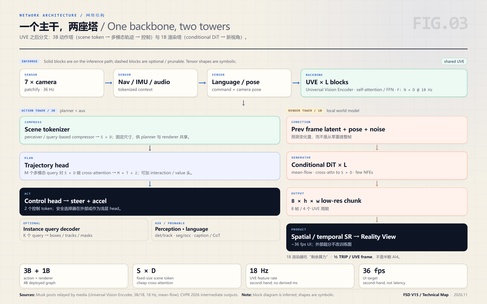
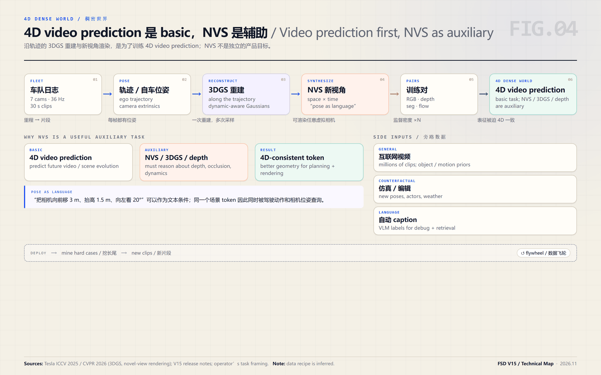
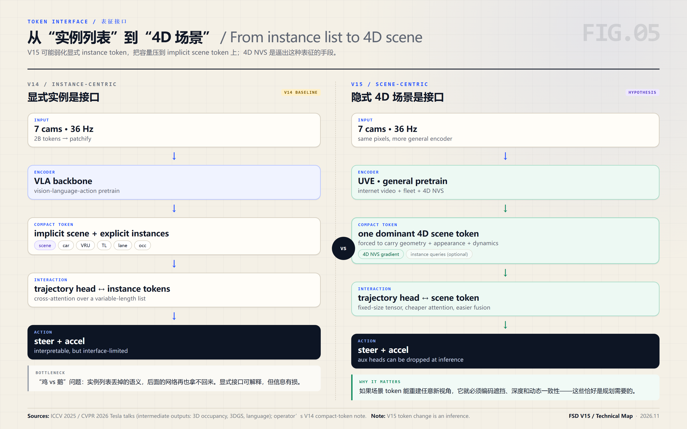

周末 FSD V15 发布之后，这两天大家看了很多视频，下午相互对了一下各自的信息，有一些共识性的结论，管中窥豹看一下 FSD V15 的改进和实现方式。这个文章更加着重于框架设计和实现层，表现层可以自己去 YouTube 看。
本文纯属个人意见，仅作记录和参考，如有雷同纯属意外；如果您有不同的意见，那肯定是你对；如果碰巧实现跟某些公司的方案相同，纯属运气。
这不是内部拆解，只是一次管中窥豹
本文没有特斯拉内部信息，主要依据公开材料、Musk 推文的二手转述、媒体拆解，以及你提供的工程判断。与其给出一个“V15 就是怎样”的结论，不如把确定的事实、合理的推断和不能确认的问题分开，再讨论一个更大的判断。
V15 改了什么
视觉编码器升级，Musk 称其为 UVE（Universal Vision Encoder），并在 FSD、Robotaxi、Optimus 之间共用；Reality View 用生成式新视角替代旧的可视化管线；Musk 提到 3B 动作模型 + 1B 渲染模型、18 Hz 特征、8 帧一组、36 fps。需要说明：这些主要来自 Musk 推文的二手转述，不是官方发布说明。
还有哪些空白
完整的训练 pipeline、SFT 是否仍是独立阶段、4D video 与 NVS 的任务关系、Grok 是否以及如何参与、媒体所说的“10B”到底指什么、NVS 是否真的提升规划指标——公开材料都不足以回答。本文会把这些问题留在台面上。
通用模型向车端迁移
如果 V15 确实把通用 VLM 预训练、VLA/WAM 适配和车端压缩部署连成一条线，那么它的意义可能不在“驾驶专用 pretrain 又加了几个任务”，而在于通用大模型能力向车端的迁移。特斯拉可能是第一个把这条“云到端”链路展示出来的公司，但“第一个”和“完全走通”都还需要时间验证。
作者没有特斯拉内部信息；多处依赖 Musk 推文的二手转述和媒体拆解。文中的“判断”只是判断，不是事实。尤其不要把本文的时间线、任务分类和“特斯拉第一”的表述当成已证实的结论。欢迎用一手材料纠正。
阅读约定：本文把信息分成四档——PUBLIC 官方发布/公开演讲；REPORTED 可信媒体或公开推文的二手转述，未独立核实；INFERRED 从架构、参数量或公开转述推导；HYPOTHESIS 你提供的判断或本文推测。所有推断都尽量给出可证伪的检查点。
先把几个名词和数字说清楚
UVE、18 Hz、10B、4B 这几个词在中文讨论里经常被混着用。它们大多来自 Musk 的推文转述，而不是特斯拉的发布说明；先把出处和不确定度摆出来，后面的讨论才不容易跑偏。
驾驶网络的升级
新视觉编码器；路牌、小动物、路面杂物、铁链、坑洼、深积水识别改进；学区/恶劣天气速度控制；测速摄像头前减速；自行车架模式；DMS 支持帽子/墨镜；导航与泊车路线学习。官方称关键干预率提升 25 倍，但这个口径需要第三方数据验证。
车机上的生成式实景
从车顶虚拟相机实时生成周围世界；不是摄像头回放，也不是游戏引擎贴图；官方称是“novel view synthesis”，由同一个端到端驾驶模型在开车的同时渲染。支持点击目标点、全屏/分屏。
UVE
出处与可信度: Musk 推文转述
它可能指什么，容易误读在哪: Universal Vision Encoder，通用视觉编码器。负责把连续摄像头画面压成特征，并在 FSD、Robotaxi、Optimus 之间共用。发布说明只写了“vision encoder”，没有展开全称。
18 Hz
出处与可信度: Musk 推文转述
它可能指什么，容易误读在哪: UVE 特征更新频率，不是相机帧率，也不是最终画面帧率。Musk 同时提到每次生成 8 帧、目标 36 fps，并把生成摊到 4 个计算周期。
3B + 1B / 4B
出处与可信度: Musk 推文转述
它可能指什么，容易误读在哪: 约 3B 的驾驶动作模型 + 约 1B 的渲染模型，合计约 4B，是车端推理图。这个拆分在中文技术圈被多次转述，但仍建议等官方文档。
10B
出处与可信度: 媒体报道
它可能指什么，容易误读在哪: 有媒体称 V15 参数从约 1B 增至约 10B，但没有说明统计范围，且与 Musk 的 3B+1B 不一致。它可能指训练图、某个旧口径，或报道误差。本文不把 10B 当作教师模型，也不把它和 Grok 混为一谈。
Grok
出处与可信度: 待确认
它可能指什么，容易误读在哪: Grok 是另一个量级的通用大模型，参数远大于 10B（具体未公开）。“Grok 参与 FSD 训练”目前只有方向性说法，没有可核对的训练细节。它可能是数据/教师/工具链的一部分，也可能只是同一套通用预训练能力的代称。
25× 关键干预率
出处与可信度: 官方口径
它可能指什么，容易误读在哪: 是“critical intervention rate”相对 V14 的改善，不是“安全性 25 倍”，也不是“提升 25%”。特斯拉没有公布 V14 的基数和统一定义。
8 帧 / 4 个周期
出处与可信度: Musk 推文转述
它可能指什么，容易误读在哪: 渲染按 chunk 生成，摊到 4 个 UVE 周期；Musk 提到目标 36 fps。这些都是二手转述；玻璃到玻璃延迟没有可靠公开数字，本文不写具体毫秒数。
½ TRIP 算力
出处与可信度: Musk 口径
它可能指什么，容易误读在哪: 是“一个 TRIP 加速器的一半”，不是“半颗 AI4”。它占整颗芯片多少比例，公开信息不足以计算，本文不推算。
HW4 only
出处与可信度: 官方口径
它可能指什么，容易误读在哪: V15 只支持 AI4/HW4；HW3 继续走 v14 Lite 分支。
UVE 不是“整个模型”，它是视觉编码器；4B 不是“云端大模型”，它是车端推理图；10B 不是 Grok，两者量级和用途都不同。把这些对象混在一起，很容易得出“V15 只有 4B”或“V15 有 10B 教师”这类过度结论。本文的处理是：能确认的写清楚，不能确认的留白。
公开说明里还有一句值得注意：新视觉编码器“用数百万条互联网视频训练”，并在 FSD、Robotaxi、Optimus 之间共用。这句话本身只能说明“通用视觉预训练 + 跨载体复用”，不能单独证明“通用大模型预训练决定了 V15 的驾驶能力”。后者需要训练细节，而目前没有。
另一个边界：V15 仍是 supervised 版本，驾驶员全程负责；它和 Robotaxi 同源，但不是无人驾驶。不要把“同源软件栈”误读成“已经无人化”。
V14 的三段式：它解决了什么，又卡在哪里
要理解 V15，先把 V14 的“三段式”摆在桌上：预训练 → SFT → 后训练。这不是三个模型，而是同一个模型的三个训练阶段；每一段解决不同的问题，也留下不同的债。

V14 面对的“维度灾难”
按特斯拉在 ICCV 2025 / CVPR 2026 的公开口径：7 路摄像头 × 36 Hz × 500 万像素 × 30 秒历史，按 5×5 像素 patch 折算，输入约 20 亿 token；再加上导航、100 Hz 运动学、48 kHz 音频。输出只有 2 个 token：转向和加速度。端到端要学的，是 20 亿 → 2 的因果映射。
这就是为什么 V14 必须在中间塞入大量“可解释信号”：3D 占据与流、车辆/行人/骑行者、交通灯与标志、道路边界与车道、限速、交互概率，以及自然语言推理。它们既是监督，也是安全审查的抓手。
V14 的 compact token
按你提供的工程信息，V14 的 compact token 包含两部分：implicit scene token（隐式场景）和 some explicit instance token（显式实例，如车、VRU、交通灯、车道）。Trajectory head 通过 cross-attention 与这些 token 交互，输出多模态轨迹。
它为什么有效
显式实例可解释、易监督、易做安全规则；SFT 把人类驾驶的“价值判断”压进策略；post-train 用 RL/闭环修 reward。三者各司其职。
它卡在哪里
实例列表是信息瓶颈（“鸡 vs 鹅”：列表丢掉的语义再也拿不回来）；SFT 分布窄；post-train 昂贵且与仿真器耦合；时序视图预测可以用 2D 捷径，不强制 3D 一致。
V14 留下的更重要东西，可能是“中间监督”这条路：让黑箱在输出动作之前，先输出一堆可被检查的东西。V14's real legacy is intermediate supervision, not a particular head.
V15 没有抛弃这条路，而是把它换了接口：从“实例列表”换成“4D 场景 token”，从“预测下一帧”换成“渲染新视角”，从“三段式”换成“通用预训练 + 蒸馏”。这就是下一节要展开的结构。
一个编码器，两条解码路径？
以下结构来自 Musk 推文的二手转述和媒体拆解，不是特斯拉官方架构图。公开信息能支持的只是几件事：UVE 共享、约 3B 的动作模型 + 约 1B 的渲染模型、18 Hz 特征。我们用它来解释一种可能的运行方式，但不把它当成已证实的训练图。

把这条前向展开成网络结构，就是下面的“两座塔”：3B 动作塔负责规划与控制，1B 渲染塔负责新视角。

UVE：Universal Vision Encoder，通用的“视觉节拍”
UVE（Universal Vision Encoder）以 18 Hz 输出特征序列，FSD、Robotaxi、Optimus 共用同一个编码器。18 Hz 这一频率来自 Musk 推文的二手转述，不是发布说明。它用数百万条互联网视频做通用视觉预训练，再在车队数据上对齐驾驶。一个合理的推测是：编码器因此不再只对“驾驶相关物体”敏感，而是对通用世界（材质、光照、动物、杂物、遮挡）更敏感。
Fork：如果共享特征成立，为什么重要
按二手转述，3B 动作模型和 1B 渲染模型都从 UVE 特征 fork。如果这个描述成立，渲染器就不是拿一段独立视频去“贴图”，而是用同一份场景表征去条件生成新视角。这样一来，渲染损失可能反传回 UVE，迫使特征同时满足两件事：
- 对动作有判别力：该影响刹车的细节不能丢；
- 对渲染有一致性：遮挡、深度、动态、光照要能在新视角下自洽。
如果共享表征成立，它的价值可能不只是多一个输出，而是多一个约束。
1B 渲染器：conditional mean-flow 是什么
按二手转述，渲染器是一个 1B 的 conditional mean-flow 模型（mean-flow 是 flow matching 的变体，学习区间平均速度场），以 UVE 特征为条件，输入“上一帧 + 噪声”，输出当前视图。它不需要从零重建整帧，而是预测变化量；因此 token 数、NFE 和算力都能压下来。
调度上，Musk 的推文转述提到 8 帧一组、目标 36 fps、摊到 4 个 UVE 周期。玻璃到玻璃延迟没有可靠的公开数字，本文不写具体毫秒数。
“½ TRIP”是一个 TRIP 加速器的一半，不是“半颗 AI4”。它占整颗芯片多少算力，公开信息不足以计算，本文不推算。能说的只是：它吃的是剩余算力，不是主控制环的预算。
4B、10B、Grok：三个不同层级的东西
车端动作模型
规模: 3B
证据: Musk 帖文
说明: 输出轨迹/控制，带辅助头。
车端渲染模型
规模: 1B
证据: Musk 帖文
说明: NVS decoder，conditional mean-flow。
车端推理图合计
规模: 4B
证据: 相加
说明: 3B + 1B；是否还有别的头/模型未说明。
媒体所称“10B”
规模: ~10B
证据: 媒体报道
说明: 范围不明，且与 3B+1B 不一致。本文不把它当作教师模型。
Grok / 通用大模型
规模: 远大于 10B
证据: 量级判断
说明: 具体参数未公开；是否参与、如何参与 V15 训练，公开信息不足。
完整系统
规模: 未知
证据: 待验证
说明: 若还有数据引擎、仿真器、其他专家，则“总参数”没有意义。
所以，比较稳妥的读法是：4B 是车端推理图；10B 是媒体口径，范围不明；Grok 是另一个量级。把 10B 当成 Grok 或云端教师，目前没有依据；把 4B 当成“V15 的全部”，也忽略了云端和工具链。
更值得讨论的，可能不是驾驶专用预训练
你提到的判断，我认同它的方向：V15 值得讨论的，不是“自动驾驶又多了几个预训练任务”，而是通用大模型（VLM）的预训练能力，能不能通过 VLA/WAM 适配和压缩部署进入车端。这个判断不是特斯拉的官方结论，公开材料也不足以证明；但它比“某个头改了”更值得拿出来讨论。
VLM 已经在云端做世界模型
视频生成、4D 场景生成、世界模型这些能力，在通用 VLM/视频模型里已经存在，并不是自动驾驶独有的新任务。对自驾来说，真正难的是把这些能力变成可车端部署、可闭环验证、可安全兜底的东西。特斯拉如果做成了，价值不在“发明了 4D video”，而在“把通用模型的预训练能力接进了车端”。
VLA 与 WAM 可能是同一条线的两端
VLA 强调视觉/语言到动作的映射；WAM 强调世界模型与 planner（你提到的 S1/S0）。两者过去像两条路线，但在“通用预训练 → 车端压缩”的框架里，它们更像是同一个模型的不同接口和 loss：VLA 负责把语言/视觉意图变成动作，WAM 负责预测世界和评估动作。V15 可能展示的是这条线的合流，而不是两个独立范式的竞争。
通用能力在云端
VLM/视频/世界模型提供视觉、物理常识和生成能力；这部分不是为驾驶单独发明的。
VLA/WAM 做适配
把通用表征接到驾驶动作、轨迹和世界预测上；驾驶数据在这里起作用。
压缩到车端
蒸馏、量化、部署工程是一件事的不同环节；目标是把云端能力压进 4B 车端图。
Grok 在哪一层？
Grok 是另一个量级的通用大模型，参数远大于 10B（具体未公开）。把它和 V15 的 10B 报道混在一起，是中文讨论里最常见的误读之一。公开信息能支持的，只是“通用模型能力可能参与”，不能支持“Grok 权重直接与 FSD 联合训练”这种具体说法。
A. 共享通用预训练栈
具体含义: Grok/xAI 的通用视觉/语言/视频预训练数据、目标、架构经验，被用于 FSD 的 UVE 和 general pretrain。
证据: 间接 UVE 用互联网视频、FSD/Robotaxi/Optimus 共用编码器。
本文判断: 较可能。与“通用预训练”叙事一致，但仍缺训练细节。
B. Grok 权重直接 co-train
具体含义: Grok 模型权重与 FSD 网络联合训练，梯度互相流动。
证据: 无公开证据 公开可见的 Grok 角色更多在座舱/语音。
本文判断: 待验证。不要把它当成已发生的事实。
C. Grok 作为数据/教师/工具
具体含义: 用 Grok/VLM 做自动 caption、场景检索、失败归因、数据清洗，或作为云端教师的一部分。
证据: 合理 大规模自动标注和云端教师是行业常见做法。
本文判断: 较可能。但它不直接证明车端模型结构。
SFT 到底还在不在？
公开信息不足以判断 SFT 是否仍是独立阶段。更稳妥的说法是：如果 planner 任务已经进入通用预训练，那么在高质量驾驶数据上的最后一段监督训练，可能退化成一段“退火”或对齐；但这是推断，不是事实。把“V15 去掉了 SFT”当成结论，目前证据不够。
对自动驾驶的冲击，可能来自通用大模型预训练能力的下放，而不是自动驾驶自己发明了一套能改变 LLM 训练的预训练方法。特斯拉可能是第一个把“云端通用模型 → VLA/WAM 适配 → 车端压缩”这条链路展示出来的公司；但“第一个”和“完全走通”都还需要时间与一手材料验证。这个判断来自你的提示和公开材料的组合，不是特斯拉官方结论。
4D video prediction 是 basic 任务，NVS 是辅助任务
这里采纳你的划分：4D video 不是 V15 新发明的任务，通用 VLM/视频模型早就在做；对自驾模型来说，它更像是 basic task。NVS 不是与它并列的“新核心”，而是训练 4D video prediction 的辅助任务，重建、渲染、3DGS、depth 都可以归到这一类。本文把这一类称为 4D dense world。

为什么 NVS 能帮到 4D video prediction
时序视图预测（用过去帧预测下一帧）有一个天然的 2D 捷径：只要学会“复制 + 局部变形”，就能在多数帧上把 loss 降得很低，而不需要真正的 3D 理解。NVS 不一样：给你一个没见过的相机位姿，要求渲染出该视角的画面。要做得对，模型必须隐式地学会深度、遮挡、物体背面、动态一致性。因此，它是一种更“硬”的辅助监督。
4D video prediction
预测未来的视频/场景演化；这是 4D dense world 的主任务，不是 V15 独有的新任务。
NVS / reconstruction / 3DGS / depth
通过新视角、重建、几何监督，逼表征编码 3D/4D 一致性；它们是训练手段，不是最终产品。
数据闭环：从车队日志到 NVS 训练对
- 车队日志：7 路摄像头、36 Hz、30 秒 clip；每帧带 ego pose 与相机外参。
- 轨迹 / 位姿：自车轨迹和相机位姿是 NVS 的条件；它们可以离散成 token，也可以文本化。
- 3DGS 重建：沿轨迹做动态感知的高斯重建；特斯拉公开讲过“生成式 3D Gaussian”，重建约 220 ms。
- 新视角渲染：在空间（左/右/上/下）和时间（前/后几帧）上采样虚拟相机，渲染 RGB、depth、segmentation、flow。
- 训练对：把“条件（位姿/语言）+ 目标（新视角）”喂给 UVE/scene token，作为 4D dense world 的辅助任务。
这条闭环的经济学很强：一次采集，多次监督。同一段 30 秒日志，不再只产出一条“人类驾驶轨迹”，而是可以产出成百上千个 NVS 训练对。这就是“把里程变成无限视角”的意思。
Pose as language
你提到“4D video NVS 中 pose 本身是 language input”，这是很关键的一点。相机位姿可以被编码成文本/离散 token，例如“把相机向前移 3 米、抬高 1.5 米、向左看 20°”。这样一来，同一个 scene token 同时被两种条件查询：
- 动作条件：自车接下来怎么走；
- 相机条件：从哪个虚拟视角看这个世界。
语言在这里不是“解释”，而是一种通用的条件接口。它让 NVS、视频生成、场景编辑、甚至反事实 rollout 共享同一套条件语法。
“local world model”不是“云端 simulator”
1B 渲染器是一个局部世界模型：短时域、条件生成、视角一致。它可以在车上实时跑，但它不是那个可以无限 rollout、做对抗场景、做闭环评估的云端神经模拟器。两者是同一个技术家族的不同规模：
时域
车端 1B renderer: 8 帧 chunk / 短时
云端 world simulator: 长时域 rollout
条件
车端 1B renderer: UVE 特征 + 上一帧 + 位姿
云端 world simulator: 状态 + 动作 + 场景编辑
用途
车端 1B renderer: Reality View、NVS 监督
云端 world simulator: 闭环评估、RL、对抗样本
算力
车端 1B renderer: ½ TRIP / UVE frame
云端 world simulator: 数据中心级
GS 重建质量、动态物体、遮挡区域、光照变化都会影响 NVS；模型可能在遮挡区“编”出不存在的细节。NVS 指标好看，不等于 planning 指标变好——这是 V15 需要证明、但目前还没有公开证明的事。
Compact token：从“实例列表”到“4D 场景”
V14 的 compact token 是“implicit scene + explicit instance”。V15 很可能把重心移到 implicit scene，把 instance 从“接口”降级为“可选查询”。这不是审美选择，而是 NVS 逼出来的结果。

V14：实例是接口，也是瓶颈
显式实例的好处是显然的：可解释、可监督、可做安全规则、可做可视化。但它同时是一个信息瓶颈。感知输出“鸡”和“鹅”的框，规划需要知道“鸡在过马路（要等）”和“鹅在路边发呆（可绕）”；一旦这个语义在实例列表里丢了，后面的网络再强也拿不回来。
而且，实例列表是变长的：不同场景有不同数量的车、人、交通灯。Trajectory head 对它做 cross-attention，计算图会随场景变化，工程上更难做确定性时延。
V15：场景是接口，实例是查询
V15 的方向更可能是：以一个固定尺寸的 4D scene token 为主接口，把 instance 变成从 scene token 里“query 出来”的可选头。这样做有三个直接收益：
- 表征更密：4D NVS 迫使 scene token 编码几何、外观、动态；规划拿到的不是一个“物体清单”，而是一个可查询的世界。
- 计算更稳：固定尺寸张量的 attention 更便宜、更可预测；没有变长列表，时延更可控。
- 推理可裁剪：辅助头（感知、语言、可视化）可以在车端关掉或降频，只保留主线和渲染。
“弱化 instance”不等于“删掉 instance”
更严谨的说法是：instance 从“接口”降级为“查询”。训练时仍然需要实例监督（检测、跟踪、分割、占据），否则安全验收过不了；但这些头可以从 scene token 解码，而不是作为独立 token 集合参与规划。推理时，它们可以被裁剪或异步执行。
这会带来一个可观察的预测：V15 的车机可视化里，传统“框 + 图标”会减少，更多是稠密的、生成式的场景；但这不等于感知头消失了，只是它不再占据规划接口的中心。
固定尺寸 scene token + 直接 cross-attention，比“变长实例列表 + 多级融合”更容易做 kernel fusion、cache 复用和确定性时延。渲染器还可以被调度到主控制环的剩余算力上——这正是“½ TRIP”能成立的前提。
三类任务：dense world、sparse world、planner
这里按你的口径，把自驾相关任务压成三类：4D dense world（4D video prediction 为 basic，NVS/重建/渲染/3DGS/depth 为辅助）、4D sparse world（AD 感知）、planner（WAM 的 S1/S0）。语言/VLM 更像接口和调试工具，不单列为第四类主线。

三类任务的分工
4D video prediction + NVS 辅助
4D video prediction 是 basic task；NVS、重建、渲染、3DGS、depth 是训练它的辅助任务。它不是 V15 新发明的任务，通用 VLM/视频模型已有类似能力。
AD 感知
检测/跟踪、交通灯/标志、实例/语义/占据分割、depth/flow。它是 AD 最成熟的监督来源，也是 4D dense world 与 planner 之间的“稀疏世界”接口。
WAM S1/S0
多模态轨迹、交互、RL、闭环、外推。按你的口径，planner 对应 WAM 的 S1/S0 模型；它是最终影响驾驶行为的任务。
语言在这里不单列为主线。它更像是条件接口（pose as language、指令、CoT）和调试/数据工具（caption、检索、失败归因）。把它单列成“dense VLM 任务”容易模糊主线，也会让任务分类看起来比实际更整齐。
一段数据，三类监督
三类任务能放在一起训，前提是 data-task pairing 做得足够细。同一段 30 秒 clip 可以同时产出：
4D video prediction
数据来源: 车队 clip + 互联网视频
标签/条件: 未来帧、时间偏移、场景演化
用途: 4D dense world 的 basic 任务
NVS / 3DGS / depth
数据来源: 车队 clip + 3DGS 重建
标签/条件: 新相机位姿、RGB/depth/seg
用途: 辅助 4D video prediction，逼 4D 一致
4D sparse world
数据来源: 车队 clip + 自动/人工标签
标签/条件: 框、track、mask、occ、depth
用途: AD 感知、安全、蒸馏监督
Planner
数据来源: 人类驾驶轨迹 + 仿真
标签/条件: 多模态未来、reward、接管
用途: WAM S1/S0，最终策略
语言 / VLM
数据来源: VLM 自动 caption + 人工审核
标签/条件: 场景描述、决策理由、QA
用途: 接口、检索、调试，不作为主线
把三类任务放回训练系统，就是下面这张框架图。它画的是一条可能的链路：通用 VLM/世界模型预训练 → 三类任务适配 → 压缩/部署到车端；SFT 是否仍是独立阶段，公开信息不足，图中用虚线表示“不确定”。

顺序与权重
一个可能的过程是：
- 通用 VLM/世界模型 warm-up：互联网视频、通用 4D/video prediction，建立世界先验；
- 4D dense + sparse：加入车队 4D video、NVS/3DGS/depth、AD 感知标签；
- Planner：加入多模态轨迹、交互、闭环/RL 课程；
- 压缩/部署：蒸馏、量化、部署工程作为一步，把能力压到车端。
这不是唯一的顺序；也可以全程混合、只调权重。SFT 是否还作为独立阶段存在，公开信息不足，本文不把它当作既定事实。
难点
三类任务会互相抢容量：4D dense 吃 decoder 和算力，sparse world 拉高分辨率，planner 要求低时延。真正的难点是任务平衡与评估：如果 NVS 指标涨了、planning 指标没涨，它仍然只是辅助任务。
不管任务怎么合并，最终影响驾驶的仍然是 planner。4D dense world 是 basic/辅助，4D sparse world 是感知接口；判断 V15 成败的指标仍是干预率、舒适度、通行效率和闭环安全，不是渲染画质。
后训练放在哪：可能被吸收，也可能仍独立
你的判断是：如果 4D video generator 已经能当 pretrain simulator，post-train 也可以吸进 pretrain，RL / interaction / closed-loop / extrapolation 都作为多模态轨迹预测的辅助任务。这个方向合理，但边界比“吸收”更模糊。

V14 的 post-train 为什么独立
因为仿真器和策略是两套东西：策略在真实数据上做模仿学习，然后在仿真器里做 RL/闭环评估；仿真器负责生成状态，策略负责动作，两者通过接口交换。这个接口既是工程边界，也是组织边界。
一种可能是：如果 V15 的 4D 渲染器能条件于动作生成反事实未来，它就不只是“回放”，而可能成为“可交互的局部模拟器”。这时，策略或许可以在同一个模型家族里 rollout，RL/交互/闭环/外推也就可以作为辅助任务，和主线的轨迹预测一起训练。这只是可能，不是已确认的设计。
“吸收”更准确的说法：课程化
更准确的可能说法是“post-train 变成 pretrain 后期的一段课程”，而不是“post-train 消失了”。区别在于：
- 数据：从“离线状态-动作对”变成“在线/半在线 rollout + 真实车队锚点”；
- 目标：从“模仿”变成“模仿 + reward + 安全约束 + 交互一致性”；
- 调度：不再是“先 pretrain 再 post-train”，而是“在 pretrain 的某个区间加大 RL/闭环权重”。
如果这个方向成立，V15 的“训练范式”确实是两段式；但“post-train”作为一个职能仍然存在，只是被重新分配到了 pretrain 的课程和 distillation 的微调里。
四个硬约束
仿真保真度
渲染得好看不等于物理正确。碰撞、遮挡、光照、其他交通参与者的反应，都可能骗过 policy。
Reward hacking
策略会找到奖励漏洞。必须用真实接管、碰撞、舒适度、规则约束做锚，不能只靠渲染器里的 reward。
分布漂移
闭环里跑久了，策略会进入自己生成的状态分布；需要真实车队数据不断校准。
算力成本
闭环 rollout 比监督学习贵一个量级。“吸收”不等于免费，可能只是把账单从 post-train 移到 pretrain。
如果 4D 生成器只能“回放”训练时见过的轨迹，它就不是 simulator，只是 renderer；如果它能接受反事实动作（“如果此时左转，世界会怎样”）并生成物理上合理、时序一致的未来，它才有资格成为 post-train 的载体。这是 V15 最值得观察的技术分水岭。
压缩与部署：蒸馏不是另一件事
按你的说法，蒸馏和部署在工程上是一步，本质都是压缩。本文接受这个划分：把云端能力压到 4B 车端，蒸馏、量化、剪枝、算子融合、时延工程是同一件事的不同环节，而不是“先蒸馏、再部署”两个独立阶段。

为什么是“深 DiT + 低分辨率”
你提到“堆叠的 DiT 深度还是非常深，但是分辨率不大；超分的外挂不难，时序超分也不难”。这与“把容量花在语义和时序一致性上，把像素交给产品层”的思路一致：
- 语义优先：场景理解、遮挡关系、动态一致性需要深网络；
- 像素后置：UI 分辨率可以通过空间超分放大；帧率可以通过时序超分/插帧补足；
- 算力可控：生成低分辨率 + 外部超分，比端到端生成高分辨率便宜得多，也更容易做确定性时延。
这些是不改变模型训练的外挂，但决定用户看到的是“糊的 4B”还是可用的实景。产品化的差距，很多时候就在这些细节上。
公开材料没有给出可靠的玻璃到玻璃延迟，本文不列毫秒数。能引用的只有二手转述里的 18 Hz 特征、8 帧一组和 36 fps 目标；它们不是官方发布说明里的指标。
压缩包含什么
如果 V15 的路径是“通用预训练 → 车端压缩”，那压缩至少包括三层：
- 能力/表征：UVE 与 scene token 的中间特征，让学生学会“看世界的方式”；
- 任务结构：三类任务的权重、data-task pairing、训练顺序；
- 部署：量化、剪枝、算子融合、确定性时延。
这也是为什么“复用 pretrain 的 task/data 配比”很重要：压缩不是从零教一个 4B 学生，而是让它在一个已经验证过的任务分布里，模仿云端模型的行为和表征。云端模型具体多大、是不是 Grok、是不是 10B，公开信息都不够；本文不在这里下结论。
能力压缩
云端 → 学生：特征、logits、渲染、轨迹、不确定性。目标是“会同样的任务”，不是“参数更小”。
表示压缩
FP32 → FP16/INT8/FP8，QAT、剪枝、算子融合。目标是“同样的能力，更低的带宽/功耗”。
产品层的四个外挂
- 空间超分：把低分辨率渲染放大到 UI 分辨率；
- 时序超分/插帧：把 chunk 之间的跳变补平，维持 36 fps 的观感；
- 遮挡补全：对摄像头盲区做合理推断，而不是简单回放；
- UI 合成与降级：轨迹箭头、可点击目标、地图叠加；渲染失败时的安全回退。
这些外挂不改变模型训练，但改变产品体验；它们也是“为什么特斯拉能先做出来”的一部分——不是算法 alone，而是算法 + 芯片 + 座舱 + 产品团队一起调。
4B 更像一个被任务结构压过的模型，而不是单纯的小模型。它的能力上限由教师和任务配比决定，下限由蒸馏/量化/时延工程决定。把 4B 当成“缩小版云端模型”会低估压缩的作用；把 4B 当成“另一个云端模型”会低估部署约束。
产业影响：门槛可能移到云和压缩
如果前面的判断成立，竞争点会从“有没有一个端到端模型”，转向两件事：能不能拿到或训练足够强的通用模型，能不能把它压到车端并稳定运行。对国内公司来说，这个变化可能比 V15 的某个具体模块更重要。

2 亿元/月买的是什么
“月投入 2 亿元”是你给出的量级判断，不是财报科目，也不是行业标准。它大致对应四块支出：
算力
千卡到万卡级集群的折旧或租赁、网络、存储、训练框架与容错；预训练的账单主要在这里。
数据与标注
车队回传、清洗、自动标注、人工审核、3DGS 重建、仿真场景生成；数据引擎是容易被低估的部分。
人才
大模型预训练、世界模型、驾驶规划、芯片协同、评测。跨学科团队，而且要能一起工作。
评测与闭环
神经模拟器、闭环 RL、安全验证、监管沟通。没有评测，预训练只是“更大”，不一定是“更好”。
三条路线
路线 A：全栈通用预训练。自己拥有基础模型、VLA、世界模型和压缩管线。上限最高，固定成本也最高。特斯拉是代表；如果华为或小米能把自家大模型与 VLA 真正合并，也有机会。但“有模型”不等于“有驾驶数据、安全验证和组织协同”，这不是自动成立的。
路线 B：借大模型 + SFT + 压缩。用外部 LLM/VLM/世界模型，SFT 代替完整的预训练，再做蒸馏/量化。这是大多数国内车企和具身智能公司更现实的动作：不需要重建预训练基建，先把压缩管线跑通。代价是模型不可控、授权/合规风险、能力上限受制于人。
路线 C：垂直数据/场景。区域数据、长尾场景、监管关系、成本控制。在 L4 限定场景或城市仍然能形成壁垒；但如果基础模型代差拉大，场景壁垒的作用会下降。
蔚小理、华为、小米：把叙事和事实分开
“御三家”这里按蔚小理理解。三家的投入都很大，但路径不同：小鹏对外释放了端到端/VLA 的正向信号；蔚来刚发布新一代方案；理想的 pretrain 方式与本文定义的“通用预训练”不完全同构，更强调与量产闭环/世界模型的结合。这些是市场叙事，不是审计数据，本文不把具体金额和排名当事实。
华为和小米的潜在优势在于“自家大模型 + 自家车/芯片/渠道”的组合。如果它们能把通用大模型与 VLA 结合，再复用云端训练/压缩管线，对只做驾驶算法的公司会形成很大压力。但难点不只在模型，还在驾驶数据闭环、功能安全、组织协同和监管。任何一环掉链子，都可能是“看起来能打，落地很慢”。
VLA 与 WAM 可能是同一条线
VLA（Vision-Language-Action）强调语言作为输入/输出，WAM（World-Action Model）强调世界模型 + 动作。两者过去像两条路线，但在“通用预训练 → 车端压缩”的框架里，它们更像同一个模型的不同接口和 loss：
- 语言仍然是接口（pose as language、CoT、caption）；
- 世界模型不是外挂，而是共享表征的一部分（NVS 渲染器）；
- 动作不只靠模仿，也靠世界模型里的 rollout/奖励来优化。
所以“VLA 与 WAM 归并”更准确的说法是：它们可能是同一个模型的不同 loss/接口。这也是为什么“拿别人的大模型 + SFT 代替完整预训练 + 压缩”会成为一些公司接下来一个季度的现实选择——不是因为它最优，而是因为它最快。
“特斯拉已经验证走通”仍然是一个强判断。公开证据能支持的是：它有压缩管线、有 4B 车端图、有 Robotaxi→HW4 的媒体报道；它不能证明“通用预训练 → 压缩”已经完整闭环，更不能证明这套范式在所有场景都优于其他路线。把“看到趋势”说成“已经终局”，是这篇文章想避免的。
对大多数公司，现实策略不是“追 2 亿/月的预训练”，而是“选一个够强的基础模型，把 SFT 和压缩做到极致，同时用垂直数据守住场景”。这会拉大与特斯拉的上限差距，但可能先把产品做出来。风险是：当对手用通用世界模型做 zero-shot 长尾时，垂直数据的边际价值会下降。
可证伪的检查点
一份技术判断的价值，不在于它听起来多合理，而在于它敢不敢被证伪。下面是接下来 1–2 个季度最值得盯的检查点。

01
检查点: UVE / 18 Hz 的出处：能否找到 Musk 原帖或官方文档？
如果成立: 这些技术细节有更硬的依据。
如果不成立: 仍是二手转述，只能当临时口径。
02
检查点: 4B / 10B / Grok 的 scope：10B 到底统计什么？是否被误当成 Grok？
如果成立: 模型规模层级可以说清楚。
如果不成立: “10B 教师”的说法不成立，应删除。
03
检查点: SFT 是否仍是独立阶段：V16 的 pipeline 会不会显示它？
如果成立: 可以判断 SFT 是被吸收还是保留。
如果不成立: SFT 仍在，“阶段塌缩”只是部分成立。
04
检查点: NVS 是否只是 4D video prediction 的辅助：特斯拉是否这样描述？
如果成立: 三类任务划分更接近真实训练。
如果不成立: NVS 是主任务或产品功能，不是辅助。
05
检查点: 是否存在真正的云到端管线：云端和车端是不是同一模型家族？
如果成立: 本文的核心判断得到支持。
如果不成立: 其实是两个模型，“云到端”只是叙事。
06
检查点: 25× 的基线与第三方数据：关键干预率是否可复现？
如果成立: V15 是真实的能力跃迁，不只是视觉升级。
如果不成立: 回到更小的改善幅度，V15 被高估。
07
检查点: 国内是否出现压缩管线招聘/论文/发布：借模型 + SFT + 压缩是否成潮？
如果成立: 本文的产业判断成立。
如果不成立: 大家仍在自研完整预训练，或路线更分散。
08
检查点: 华为/小米是否合并大模型与 VLA：有没有统一的车端模型？
如果成立: 竞争压力从叙事变成现实。
如果不成立: 组织/数据/安全壁垒比模型更难。
结构性变化
通用模型能力和压缩部署成为主轴；驾驶专用预训练单独的重要性下降；拿不到强模型或压缩管线的公司会更快落后。
一次体验升级
Reality View 很酷，但驾驶能力提升有限；行业回到数据闭环、成本和安全验证的竞争，通用预训练叙事降温。
术语表
UVE
Universal Vision Encoder，通用视觉编码器。V15 中 FSD、Robotaxi、Optimus 共用，18 Hz 输出特征。出处为 Musk 推文的二手转述，不是发布说明。
VLA
Vision-Language-Action。以视觉为输入、语言为中间/输出、动作为目标的模型范式。
WAM
World-Action Model。以世界模型为核心、动作为输出的范式；与 VLA 正在合流。
NVS
Novel View Synthesis，新视角合成。给定新相机位姿，渲染该视角的画面；4D NVS 还要求时间一致。
3DGS
3D Gaussian Splatting。用大量高斯椭球表示场景，可微、渲染快、支持动态物体。
DiT
Diffusion Transformer。用 Transformer 做扩散/流匹配去噪主干的生成模型。
Mean-flow
Flow matching 的变体，学习区间平均速度场；用更少 NFE 完成生成，适合车端低时延。
Compact token
V14/V15 的中间表征接口；V14 含 implicit scene + explicit instance，V15 更偏 4D scene token。
SFT
Supervised Fine-Tuning。在高质量驾驶数据上做监督微调；V15 可能把它吸收为 pretrain 的退火项。
RL / 闭环
强化学习与闭环评估。用仿真/世界模型 rollout，按 reward 和安全约束优化策略。
Distillation
蒸馏。把大模型教师的能力（特征、输出、任务结构）迁移到小车端学生。
QAT / 量化
Quantization-Aware Training。训练时模拟低精度，部署时转 INT8/FP8，降低带宽/功耗。
TRIP
特斯拉 AI4 芯片中的神经网络加速核；Musk 说 Reality View 用“半个 TRIP”，不是半颗 AI4。
MPCI
Miles Per Critical Intervention，平均多少次关键干预行驶的里程；V15 的 25× 就是相对 V14 的这个指标。
来源、证据政策与说明
本文不是特斯拉官方文档。它把公开信息、你提供的工程判断和作者的推断放在一起，并尽量标注每一层的可信度。
证据政策
- PUBLIC：特斯拉发布说明、Musk/Ashok 公开表态、CVPR/ICCV 演讲、官网安全数据。
- REPORTED：可信媒体/技术博主报道，但未独立核实；本文会注明“报道”而非“官方”。
- INFERRED：从参数量、时延、算力、架构约束推导；可能被新信息推翻。
- HYPOTHESIS：你提供的判断或本文推测；不作为事实引用。
主要来源
- Tesla FSD V15 推送与发布说明综合报道，搜狐/环球网，2026-11-22：链接
- Reality View 生成式实景与算力说明，中关村在线，2026-11-23：链接
- FSD V15 视觉编码器 / Reality View 深度拆解，OFweek，2026-11-23：链接
- Musk 推文转述：UVE 全称 Universal Vision Encoder、18 Hz、3B/1B、8 帧 / 36 fps、½ TRIP，新浪/微博，2026-11-22：链接
- Tesla CVPR 2026 演讲全文与解读（通用机器人基础模型、中间输出、World Sim NN），OFweek，2026-06-05：链接
- 从 Tesla ICCV 2025 分享看端到端（2B token、3DGS、语言推理），人人都是产品经理，2025-12-22：链接
- UVE / 3B / 1B fork 与 18 Hz、8 帧 chunk 的公开转述整理，微博，2026-11-22：链接
- Musk 回复“3B + 1B”截图与讨论，微博，2026-11-22：链接
- V15 “10B 参数 / 25× / 架构重构”综合报道，TechWeb，2026-11-23：链接
- V14.3.5 统一模型与 Robotaxi→HW4 蒸馏报道，网通社，2026-07-21：链接
- FSD V15 刷屏与 25× / 产业影响分析，搜狐汽车，2026-11-23：链接
关于 10B：第 8 条是媒体口径，与 Musk 的 3B+1B 不一致；本文只把它当作“范围不明的报道”，没有把它写成教师模型。Grok 是另一个量级的通用模型，具体参数未公开。
本文如何处理你提供的 11 条
这 11 条判断不再单独成节，统一放在文末 附录 A，逐条标注证据等级；与公开信息冲突的地方（如“Grok 直接共同训练”“10B vs 4B”）按 scope 拆开，没有公开证据的地方（如“去掉 SFT”“弱化 instance token”“超分外挂”）标为推断，并给出可证伪的检查点。
引用与更新
引用格式：管中窥豹 FSD V15, 2026-11-23, v1.1。本文会随公开信息更新；如果你有更一手的 V15 训练细节，欢迎把证据补进来，尤其是：UVE 的预训练数据配比、4D video / NVS 的训练条件、compact token 的实际结构、压缩管线的配置。
版本：v1.1 · 2026-11-23 · 中文/English · 11 张图 · 单文件 HTML。
声明：本文不构成投资建议；公司/路线判断为作者分析，不代表任何公司官方立场。
附录：11 条判断的校验表
这 11 条判断保留在这里，作为全文的校验表：逐条给出证据等级、本文判断和对应章节；没有删减，公开事实和待验证假设仍然分开。
01
你的判断（压缩）: Grok 与 FSD 一起训练；V14 的 VLA pretrain 变成 V15 的 general pretrain
本文判断: 待验证
通用预训练方向可讨论；“Grok 权重共同训练”无公开证据
证据 / 说明: UVE（Universal Vision Encoder）用互联网视频、跨 FSD/Robotaxi/Optimus 共用，来自 Musk 推文的二手转述；Grok 是另一个量级的模型，参与方式不明。见 §04。
02
你的判断（压缩）: SFT 依然使用 driving 数据
本文判断: 部分成立
数据很可能仍在使用；是否独立成阶段未知
证据 / 说明: V15 发布说明仍强调车队数据与驾驶行为改进；但“SFT 是否消失”没有公开 pipeline 可证。见 §04。
03
你的判断（压缩）: 4D video generation 权重增强；basic 能力有 local world model，支持 NVS；训练数据是沿轨迹的 GS 重建
本文判断: 方向合理
4D video 是 basic，NVS 是辅助；数据配方是推断
证据 / 说明: 官方明确说“novel view synthesis”“3D Gaussian”；4D video 不是 V15 新任务，NVS 是训练它的辅助方式之一。见 §05。
04
你的判断（压缩）: V14 框架不变；V15 可能去掉 SFT，重新调整 data-task 配对
本文判断: 待验证
“阶段合并”目前只是推断
证据 / 说明: 没有官方 pipeline 图。planner 是否进入通用预训练、SFT 是否保留，都不能从公开信息确认。见 §07。
05
你的判断（压缩）: Compact token = implicit scene + explicit instance；V15 弱化 instance、强化 implicit，靠 4D NVS
本文判断: 合理推断
与 NVS 的经济学一致，但未证实
证据 / 说明: V14 compact token 来自你的工程信息；V15 没有公开 token 细节。NVS 是辅助任务，不是唯一驱动。见 §06。
06
你的判断（压缩）: Traj head 改动不大；与 scene token 交互可加速；推理可移除辅助任务
本文判断: 合理推断
固定尺寸 scene token 确实更便宜
证据 / 说明: 时延/算力约束支持“裁剪辅助头”；具体 head 结构未公开。见 §06。
07
你的判断（压缩）: 去掉 SFT 后合并任务：dense VLM/4D gen、perception、planner，共四类
本文判断: 按新口径修正
三类：4D dense、4D sparse、planner
证据 / 说明: 4D video 是 basic，NVS/3DGS/depth 是辅助；AD 感知是 sparse world；planner 对应 WAM S1/S0。语言/VLM 是接口，不单列主线。见 §07。
08
你的判断（压缩）: Post-train 也可吸入 pretrain：RL / interaction / closed-loop / extrapolation 作为轨迹预测的辅助任务
本文判断: 方向合理
边界比“吸收”更模糊
证据 / 说明: CVPR 2026 的 World Sim NN ↔ Policy NN 闭环是公开的；但“完全吸入”未被确认。见 §08。
09
你的判断（压缩）: 3+1B：3B backbone，1B NVS decoder；DiT 很深、分辨率不大；超分/时序超分是工程外挂
本文判断: 3+1B 成立
10B 口径不明；低分辨率 + 外挂超分是推断
证据 / 说明: Musk 帖文（二手转述）给出 3B/1B；“10B”来自媒体且与 3B+1B 不一致；Grok 远大于 10B。SR 未见官方确认。见 §09。
10
你的判断（压缩）: 范式从 pretrain→SFT→post-train 变成 pretrain→distillation；大模型到 4B；复用 task/data 配比；量化部署
本文判断: 方向支持
压缩是一步；特斯拉第一仍需验证
证据 / 说明: V14.3.5 已有 Robotaxi→HW4 蒸馏报道；但“云到端完全闭环”和“第一个走通”仍是判断，不是已证事实。见 §09。
11
你的判断（压缩）: 国内只有少数公司能月投 2 亿做 pretrain；蔚小理、华为/小米的格局；VLA 与 WAM 归并；借大模型 + SFT + 蒸馏是未来一个季度的做法
本文判断: 观点 / 分析
方向有逻辑，公司判断不可当事实
证据 / 说明: 这是产业分析，不是审计数据。“2 亿/月”是量级参考，不是行业标准；公司位置只是示意。见 §10。
“成立”指与公开信息一致；“合理推断”指没有直接证据、但架构与工程约束支持；“观点”指作者判断，不应作为事实引用。